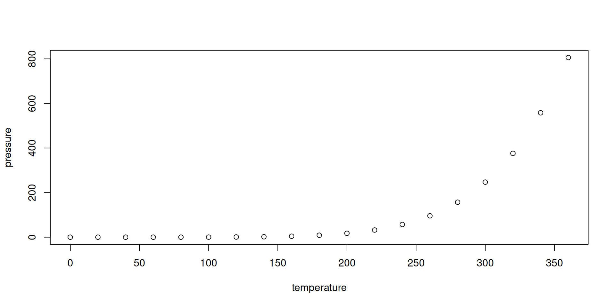

[1] 2Let’s Rock and Roll!
October 28, 2026
Some quick house keeping notes for those new to RevealJS
To move between slides in the presentation, please use:
j, or right arrowk or left arrowSome other common tasks with RevealJS:
moalt (windows) or option (mac)This slide theme using reveal-js.calkboard plugin to allow for annotations. See Quarto documentation for supported options. Note, the following keyboard short cuts:
cbdeldDisplay:
\[a^2 = b^2 + c^2\]
Inline: \(\frac{a+b}{a} = \frac{a}{b} = \varphi\)
Below is a list that as you move forward the items are displayed.
Example R code:
